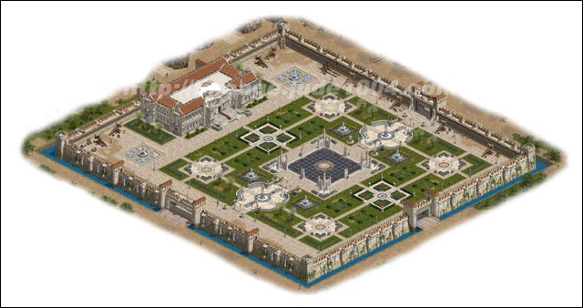

2002年12月28日
來源：Jude1004.com

Jude1004.com製作了亞丁城堡的全境地圖，大家可以按上圖下載。亞丁城堡是位於整個亞丁村的中央，四周以河流相隔，共有三個外城門，至於攻城方式如何？四元素與主守護塔和四元素城門的分佈如何？答案將會於12月30日的亞丁攻城戰揭曉。
Copyright(C)1998-2003 Gabriel Leung. All Rights Reserved.